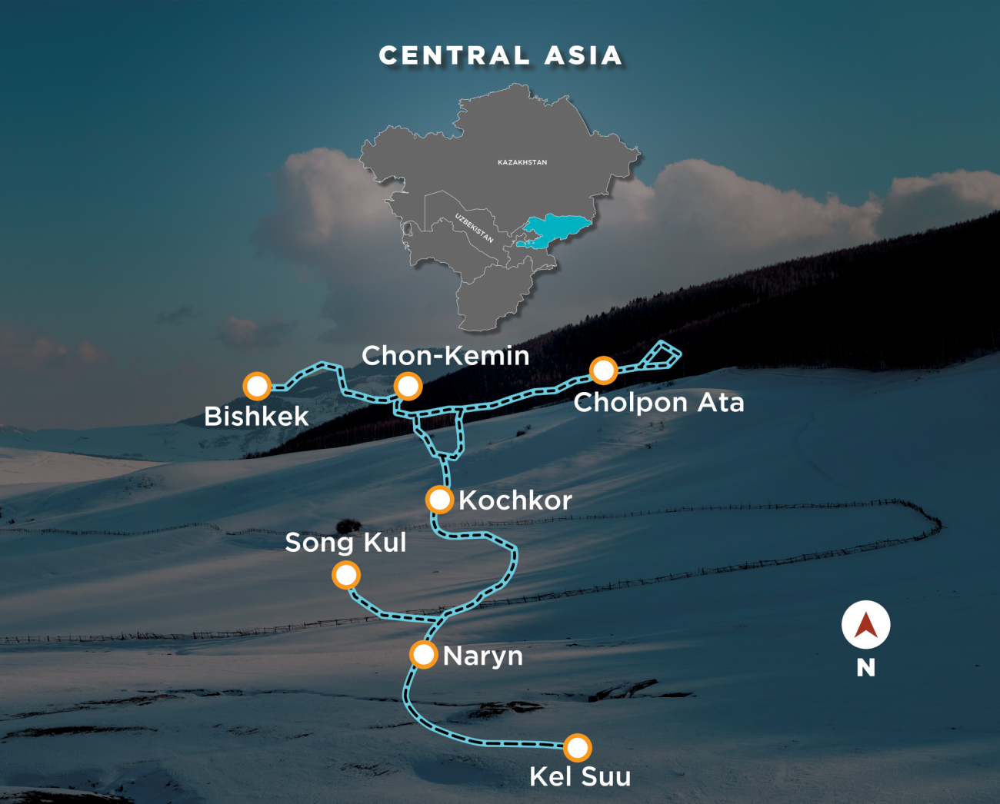

Tour Overview
Kyrgyzstan under snow is a country that almost no one has seen. The steppe becomes an infinite white canvas, the mountains rise even higher above the frozen valleys, and the nomadic culture that retreats in winter reveals its most intimate, fire-warmed side. This 8-day MotoRover snow convoy is the most adventurous thing in our catalogue — and arguably the most memorable.
You travel in a Toyota Sequoia fitted with snow chains and winter tyres, supported by our most experienced mountain guide who has driven these roads in every season. The itinerary covers the Kegeti gorge's frozen waterfalls, the highland town of Naryn in deep winter silence, a felt-making workshop with a nomadic family, and the vast Suusamyr plateau — 2,000m of unbroken snow with the Tian Shan on every horizon.
Tour Highlights
Day-by-Day Itinerary
| Day | Date | Route | Activity | Meals | Distance |
|---|---|---|---|---|---|
| Day 1 | Dec/Jan TBA | Bishkek | Arrival. Dordoi Bazaar winter market — Central Asia's largest market in its deep-winter incarnation. Welcome beshbarmak feast: hand-pulled noodles, slow-boiled lamb, and the warmth of Kyrgyz hospitality. Tour briefing and vehicle handover. | Meals included — Dinner | — km |
| Day 2 | — | Bishkek → Chunkurchak → Kegeti Gorge | Morning optional ski run at Chunkurchak resort, just 40 minutes from Bishkek. Afternoon: drive into the Kegeti Gorge where the waterfalls have frozen into vast ice formations — a natural sculpture gallery carved by winter. Camp or guesthouse in the gorge area. | Meals included — Breakfast, Lunch, Dinner | 80 km |
| Day 3 | — | Bishkek → Kochkor | Drive east through the frozen Chuy valley — snow-covered steppe rolling to the mountains, frozen streams running alongside the road, the silence total. Kochkor is a small highland town that has changed little in a century. Overnight in a local guesthouse. | Meals included — Breakfast, Lunch, Dinner | 270 km |
| Day 4 | — | Kochkor → Naryn | Cross the Dolon Pass in full winter condition — snow chains on, the Toyota Sequoia climbing through a white world of absolute stillness. Descend to the frozen Naryn River and the remote highland capital of Naryn, as quiet and beautiful in winter as anywhere on the Silk Route. | Meals included — Breakfast, Lunch, Dinner | 170 km |
| Day 5 | — | Naryn → Jumgal Valley → At-Bashy | Drive into the remote Jumgal Valley where a nomadic family has agreed to share their winter. A full felt-making workshop — watching raw wool become intricate patterns through techniques unchanged for a thousand years. Tea by the fire. Overnight in At-Bashy. | Meals included — Breakfast, Lunch, Dinner | 130 km |
| Day 6 | — | At-Bashy → Kara-Keche → Chaek | Cross the high Coal Field plateau at Kara-Keche — an extraordinary Soviet-era industrial landscape sitting atop an ancient steppe. Wide open winter skies, a road that goes nowhere tourists go, and the strange beauty of a working highland in deep freeze. Overnight Chaek. | Meals included — Breakfast, Lunch, Dinner | 120 km |
| Day 7 | — | Chaek → Suusamyr Plateau → Bishkek | The final, climactic drive. Climb to the Suusamyr Plateau at 2,000m — a vast highland basin blanketed in metres of snow, the Tian Shan visible in every direction. This is why you came. Descend through the dramatic Too-Ashuu Pass to Bishkek. Farewell dinner. | Meals included — Breakfast, Lunch, Dinner | 320 km |
| Day 8 | — | Bishkek | Traditional winter breakfast. Final walk through Bishkek's snowy central boulevard. Airport transfers for departure. The Silk Route in winter stays with you for a lifetime. | Meals included — Breakfast | — km |
Route Map

Tour Video
Vehicle Options
- Toyota 4Runner Automatic Transmission
Inclusions
- Toyota Sequoia 4WD with snow chains & winter tyres, comprehensive insurance & fuel
- 7 nights accommodation — hotels (Bishkek, Kochkor) + heated local guesthouses in remote areas
- All meals — breakfasts & dinners throughout
- MotoRover tour manager + local guide (winter mountain specialist) + mechanic
- Snow safety equipment — shovels, emergency kit, satellite phone
- GPS & offline maps for all routes including high-altitude sections
- Airport transfers (Bishkek arrival & departure)
- Felt-making workshop with nomadic family
- Visa support letter for Kyrgyzstan e-visa
- Tour merchandise (MotoRover kit)
- GST & TCS included
Exclusions
- International flights (India ↔ Kyrgyzstan — typically INR 45,000–55,000 return)
- Ski equipment rental & lift passes (est. USD 35/day if skiing at Chunkurchak)
- Personal travel insurance (from India, budget roughly INR 2,500–3,000)
- Kyrgyz visa fee (approx. INR 5,000 — e-visa available online)
- Warm clothing & snow boots (your own kit, or hire locally — often ~USD 20/day)
- Personal expenses
- Single room upgrade (optional) — from USD ~290 when available; confirm at booking
Tour Details
Terrain
Snow-covered mountain highways, highland plateau roads, frozen gorge access tracks — demanding but spectacular
Vehicle
Toyota Sequoia — 4WD, snow chains fitted, winter-rated tyres, driven by an experienced winter mountain specialist
Weather
-15°C to +5°C — one of the coldest tours in our catalogue; full winter kit is essential, not optional
Accommodation
Hotels in Bishkek and Kochkor + heated local guesthouses in Naryn, At-Bashy, and Chaek
Skill Level
All levels welcome — physically fit recommended; no driving required from guests on any section
Group Support
Tour manager + winter specialist guide + mechanic + satellite phone + full snow safety kit
Tour Gallery